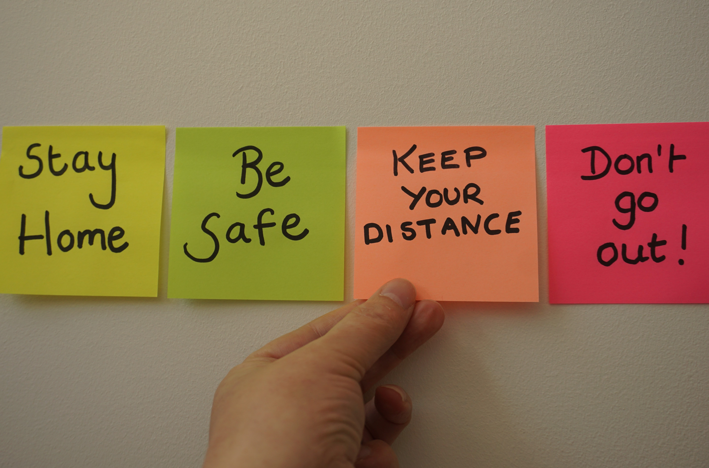

이지선의 대학교 4학년은 2020년에 시작되었다.
2020년은 무엇이지?
바로 대코로나 시대가 시작한 년도이다.
앗! 코로나가 우한폐렴인 사실은 잊지말자구.
...
그 누가 예상이나 했겠는가.
2년 전의 영국생활을 그리워하며 떠났던 나는
2개월만에 다시 한국으로 돌아올 수 밖에 없었다.
그래도 그 때만 해도 이는 아주 잠깐일거라 생각했다.
...
시간이 자연스럽게 흘러가면서 알게 되었다.
이 바이러스는 절대 자연스럽게 사라지지 않는다.
다른 관점에서 보면 정말정말정말 색다른 경험이다.
나뿐만 아니라 모두에게
...
모든게 겨울처럼 얼어붙었다.
물리적으로, 심리적으로 모두.
하지만 현실을 더욱 냉정하게 바라볼 수 있었다.
2년만에 또 다른 터닝 포인트가 찾아온 것이었다.
...
easysun25@naver.com @2zstar